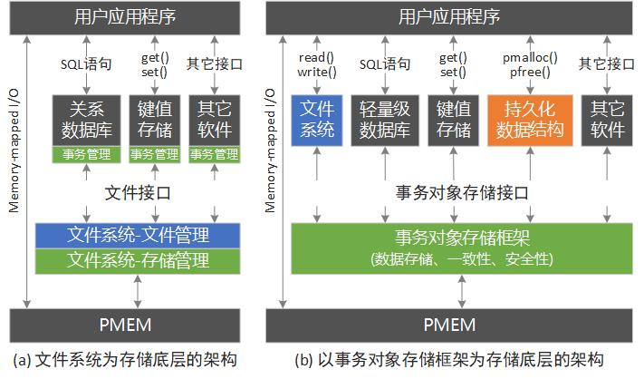

项 目
-
2012
12
JavaBlog
语言: Java/Javascript/HTML/CSSJavaBlog是我在大学期间开发的Java博客系统， 它几乎具有一个完整博客的所有功能，包括用户组(权限管理)，多用户(登录、注册)，文章(撰写、发表、修改)，文章分类与标签，评论，订阅，文件上传，发送邮件，系统日志等。
JavaBlog是一个以学习为目的的产物，它遵循MVC设计模式，代码十分“干净”：除了一些必要的数据库连接、编码包之外，没有使用任何Java框架(Struts，Spring，Hibernate)， 就连后台文章编辑器的实现中也不依赖别的框架比如jQuery。
JavaBlog也是本网站的源代码，已经放到了GitHub上，欢迎找BUG。
-
2014
3
HTML5 Tetris (点击标题进入游戏)
语言: Javascript/HTML/CSSHTML5 Tetris是一个用HTML5和Javascript编写的俄罗斯方块游戏，点击标题链接即可进入游戏。 当时是为了祝福一个朋友生日快乐才做的(其实只是想装*)，通关后你就知道是祝福谁了。 虽然并没啥技术含量，留着当纪念也无妨。
源码也在GitHub上，因为是静态网页，因此直接用浏览器保存页面也能获得。
最近在复习算法的时候，给游戏增加了一个基于贪心策略的简单AI。大家有好玩的想法，欢迎交流。
-
2014
10
事务对象存储框架(PMStore)是一个用于管理持久内存(Persistent Memory, PMEM)的底层存储框架， 它和操作系统的传统存储架构的对比如下图所示。
在传统的操作系统存储架构中，文件系统是作为最底层的系统软件，上层的各种应用，如轻量级关系型数据库SQLite， 键值存储Tokyo Cabinet，以及各种应用程序都基于文件系统提供的文件接口来存取自身的数据。
这种架构本身没什么问题，问题在于作为存储底层的文件系统所提供的接口并不高效。 首先是文件系统是以目录层次结构来组织文件的，这种组织方式会带来额外的开销。 而其实并不是所有的应用程序都需要这种目录结构。 其次是文件接口的语义有限，文件系统只能保证单次文件读写的原子性，却无法保证多次读写之间的原子性。 而对于基于文件系统的应用比如SQLite来说，它常常需要保证多次数据读写之间的原子性。 于是SQLite就会自身实现一套事务机制来保证这种原子性(一致性)。 而文件系统内部在保证单次读写的原子性的时候，也会实现一套一致性机制(给自己用)。 由于一致性的保证一般是通过undo logging或者redo logging(write-ahead logging，WAL)来实现的， 因而不可避免地会引入数据的写放大，即实际写的数据要比逻辑上需要修改的数据量大，从而降低性能。
于是PMStore就将文件系统的文件管理模块和存储管理模块拆分开来， 将存储管理模块单独作为系统的存储底层，并在其中集成事务功能，同时将这种事务机制提供给上层应用。 这种将文件管理和存储管理分离的思想和对象存储系统十分相似，独立出来的存储管理以对象的形式对外界提供数据访问。 比单纯的块存储安全性更高，同时比文件存储效率更高。同时利用对象属性机制为持久内存上存储的数据访问给予更加丰富的扩展可能性。
PMStore的接口类似于文件接口(参数形式类似)，这使得将基于文件系统的应用移植到PMStore上变得简单。 目前已经移植了一个文件系统PRAMFS(这个文件系统只需要实现文件管理功能就行了)，一个关系型数据库SQLite和一个键值存储Tokyo Cabinet。
PMStore还支持内存映射I/O(Memory-mapped I/O)，即将持久内存映射到用户地址空间中并通过指针直接访问。 这使得在其上可以开发“持久化数据结构(编程库)”这种为持久内存而生的特殊应用软件。 一般地，一个应用程序在运行过程中会使用各种内存数据结构，如链表，树等。 这些数据结构的内存都是通过如malloc()的接口动态分配的，而 用于填充数据结构的原始数据内容是从(磁盘)文件中读取，并根据特定的规则进行转化。 由于DRAM内存掉电后数据会丢失，因此这些数据结构不能直接持久化保存， 只能靠应用程序自身在结束前将数据结构中(修改)的数据再按照相应规则转存到文件中。
有了持久化数据结构这种应用后，它会提供类似于传统内存分配函数(malloc())但是增加了持久化功能的持久内存分配接口(如pmalloc()，persistent malloc())。 这样应用程序通过pmalloc()分配的内存就是持久化的，用它构建的数据结构也就是持久化的。 这种持久化的数据结构就像一种特殊格式的文件一样，有自身的元数据和数据(数据就是pmalloc()分配的空间中的内容)。 但是与文件不同，这种数据结构可以通过指针直接访问，因此就算应用程序重启，它下次还能够直接访问这些数据结构。 而不再需要像以前那样进行内存数据结构和磁盘文件之间的格式转换了，因而效率更高。 (当然，持久化数据结构编程库需要提供一个类似文件打开的函数来帮助应用程序找到相应的数据结构，这是通过记录元数据来实现的)。
总的来说，PMStore提供了一套持久内存的底层开发框架，基于它所提供的事务对象接口，可以移植基于文件系统的传统软件如轻量级数据库，也可开发新型应用如持久化数据结构。 就算应用程序不做任何修改，也能在基于PMStore的文件系统上运行。
-
2015
11
NoVFS
语言: CNoVFS是一个绕过了Linux系统VFS(Virtual File System)层次的持久内存文件系统，是与实验室师兄合作的项目。
VFS为文件系统定义了一套接口规范，用户文件操作请求从标准库发出后，会经过系统调用转到VFS层次。 VFS进行一些处理(如路径查找，inode / dentry缓存查找等)，然后转到具体的文件系统进行最后的处理。 这样虽然方便了文件系统的设计与实现， 但是引入了两层缓存查找开销：比如创建删除文件时，查找一个文件名时先去VFS的cache中查找， 再交给具体的文件去查找一次。 此外，VFS内部为每个文件维护的inode和dentry内存对象(结构体)， 也产生了结构体的转化开销(从文件系统内部维护的元数据对象转化成为VFS的内存对象。 这会降低持久内存文件系统的元数据性能。
于是就提出了一个绕过VFS的文件系统-NoVFS。 它自身实现了一套独立的inode / dentry缓存(并且其实把这两个缓存合二为一了)，以及路径查找功能，这样就只需要一次cache查找了。 为了保证应用程序的兼容性，NoVFS还使用了一套用户态的库，用来拦截应用程序对文件系统的访问并自动转到NoVFS的内核模块进行处理。
-
2020
6
PMEM Bandwidth Predictor
语言: C一个用来监控英特尔傲腾持久内存(Intel Optane Persistent Memory，PMEM)带宽的内核模块。 由于PMEM的聚合带宽会受到访问模式的顺序或随机程度的影响(PMEM的内部256B粒度 > CPU的64B访问粒度，故随机读写会造成写放大)，从而影响应用程序性能。 该工具利用CPU中的性能监控单元(PMU)来监控内存控制器的读写队列情况，为分析PMEM的带宽饱和程度提供参考。 该工具的兼容性尚在完善，待稳定后再放出。